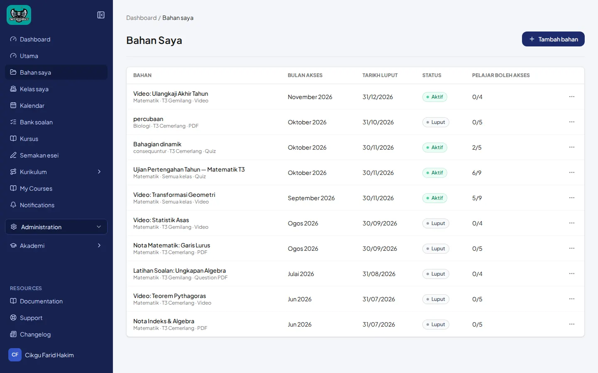
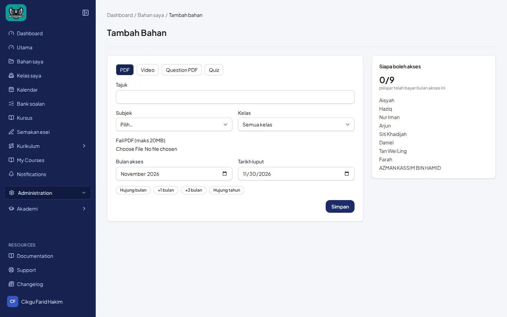
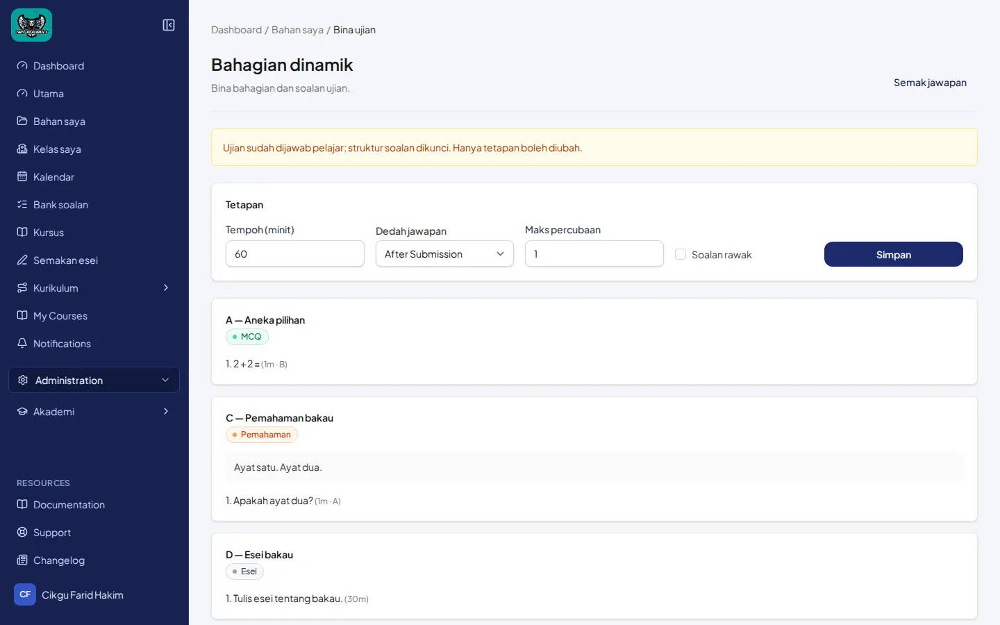
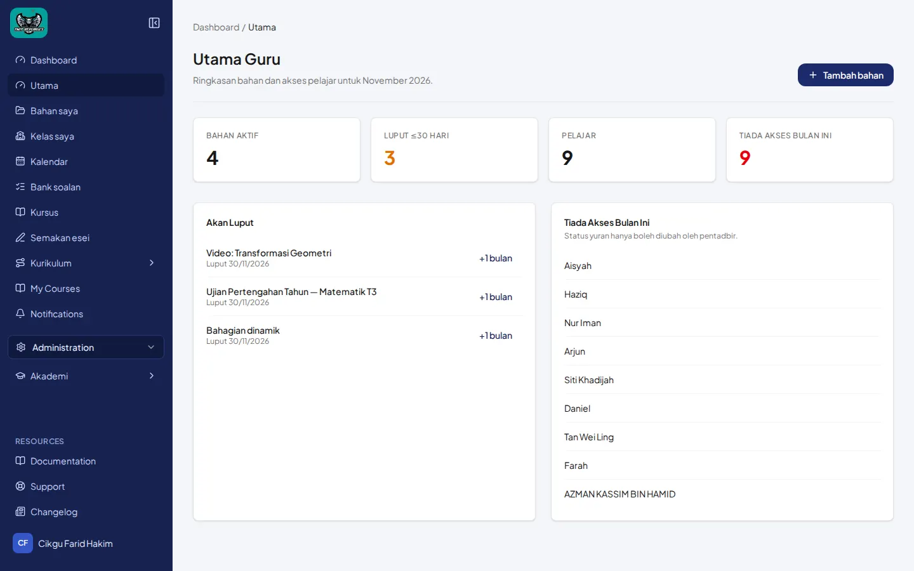
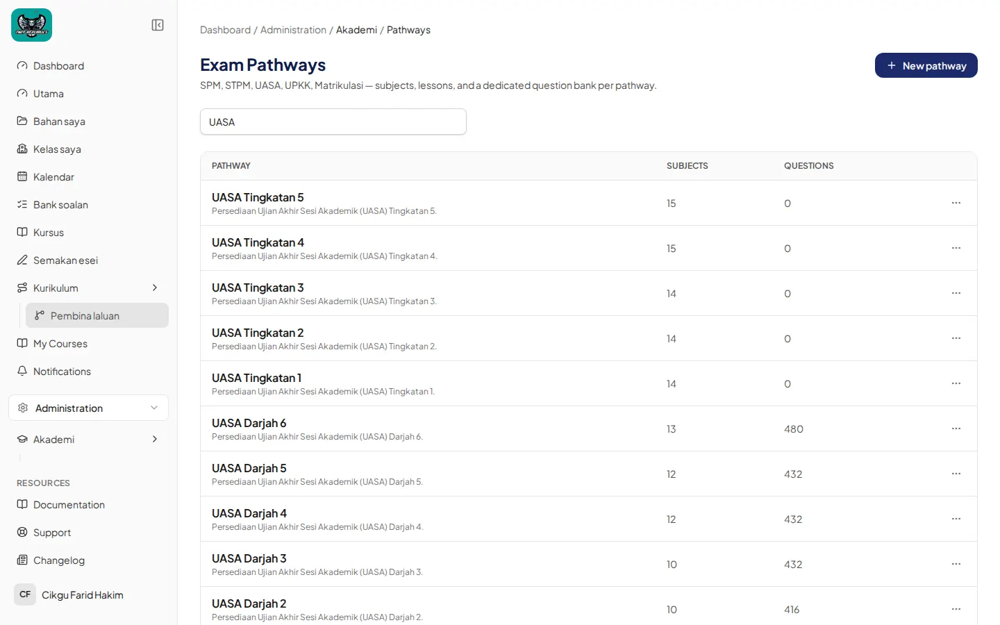

ExamBuilder guru (bahan) — MCQ, Subjektif, Pemahaman, Esei
Panduan 3b — bina ujian pada bahan (material), bukan Set ujian pelajaran laluan. Ciri berbeza: lihat Panduan 3a.
Bahasa Melayu
1. Bahan saya
- Menu guru: Bahan saya → + Tambah bahan.
- Cari bahan jenis Quiz, cth. Bahagian dinamik (Aktif).


2. Bina ujian (skrin terkunci — diperhatikan)
- Breadcrumb: Dashboard / Bahan saya / Bina ujian. Tajuk kertas: Bahagian dinamik. Subteks: “Bina bahagian dan soalan ujian.” Pautan Semak jawapan.
- Banner kuning: Ujian sudah dijawab pelajar; struktur soalan dikunci. Hanya tetapan boleh diubah.
- Tetapan (masih boleh disimpan): Tempoh (minit) (cth. 60), Dedah jawapan (cth. After Submission), Maks percubaan (cth. 1), kotak Soalan rawak, butang Simpan.
- Bahagian yang kelihatan pada kertas demo ini (dikunci): A — Aneka pilihan (badge MCQ), C — Pemahaman bakau (badge Pemahaman), D — Esei bakau (badge Esei). Badge jenis Subjektif wujud dalam sistem tetapi tidak dipamerkan pada skrin demo ini.

3. Aliran cipta (apabila struktur TIDAK dikunci) — bukan demonstrasi skrin ini
Pada kertas baharu / draf tanpa percubaan pelajar, UI membolehkan Tambah bahagian dengan Jenis MCQ, Subjektif, Pemahaman, Esei (dan Petikan untuk pemahaman), serta tambah soalan / salin dari bank. Langkah-langkah itu tidak dapat ditunjukkan pada “Bahagian dinamik” kerana struktur dikunci. Jika anda memerlukan tangkapan aliran cipta penuh, seedkan kertas ExamBuilder bersih tanpa percubaan pelajar.
English
Guru material Bina ujian is separate from pathway lesson Set ujian. The only sectioned ExamBuilder paper in these captures is the small demo Bahagian dinamik: a student has already answered, so structure is locked and only Tetapan (duration, reveal answers, max attempts, randomize) can change. Visible locked sections include MCQ, Pemahaman, and Esei. Do not treat this paper as a full exam. Creation UI is described from product behaviour when unlocked — not shown on this locked screen.

